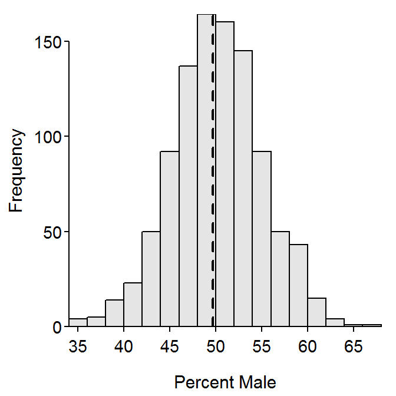
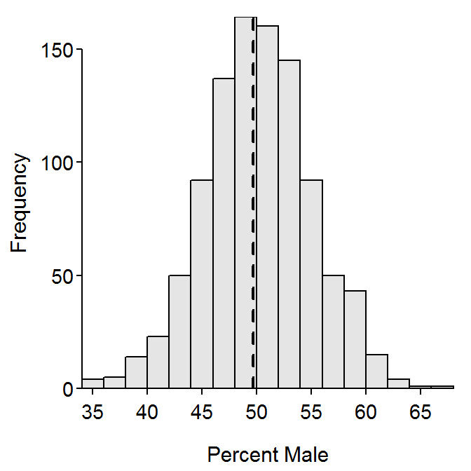

The following code is used to produce a “live” example for class. The meaning of this code will be explained later. For now, we simply want the results that are produced.
Type the code exactly as shown in each grey box and attempt to answer the follow-up questions. Please don’t go on to the next section until we have discussed the questions as a class.
Obtain a Random Sample of Residents from Ashland-Bayfield Counties
library(NCStats)
( samA <- srsdf(ABCens90,n=100) )
- Are the individuals in your sample identical? Why or why not?
- Write a one or two sentence conclusion about the age of individuals in your sample.
- Write a one or two sentence conclusion about the sex of individuals in your sample.
- Were your conclusions “easy” or “hard” to write? Why? What could you do to make writing your conclusions easier?
Summarize Your Sample
Summarize(~age,data=samA,digits=1)
percTable(xtabs(~sex,data=samA),digits=1)
- How was the “mean” age calculated?
- How was the percentage of males calculated?
- Write a one or two sentence conclusion about the age of individuals in your sample.
- Write a one or two sentence conclusion about the sex of individuals in your sample.
- Was it easier to write your conclusions here then previously? Why or why not?
Obtain a Second Random Sample
( samB <- srsdf(ABCens90,n=100) )
Summarize(~age,data=samB,digits=1)
percTable(xtabs(~sex,data=samB),digits=1)
- Were the mean ages from the two samples identical?
- Were the percentage of females from the two samples identical?
- Are your results (about whether the mean or percentage between samples were identical) typical or expected? Why or why not?
Compare Your Results to the Truth
Summarize(~age,data=ABCens90,digits=1)
percTable(xtabs(~sex,data=ABCens90),digits=1)
- Did your sample mean ages exactly equal this true value for the population?
- Did your sample percentages of females exactly equal this true percentage of females in the population?
- Are your results (about whether the summaries from your sample matched the summary from the population) typical or expected? Why or why not?
Examine Many Random Samples of Residents from Ashland-Bayfield Counties
 
